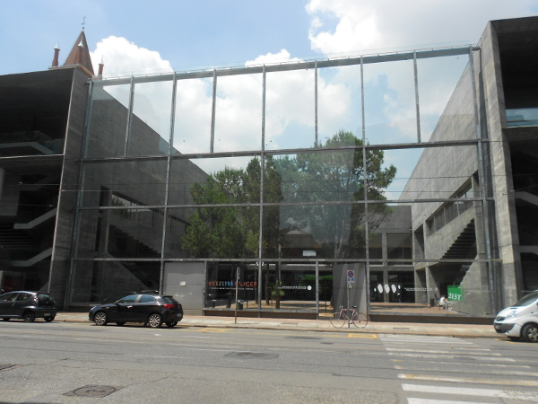

Il Linux Day è un evento nazionale, che si svolge nello stesso giorno (quest'anno, sabato 24 ottobre) in più di 100 città italiane.
Il Comitato Linux Day Torino, costituito informalmente da volontari, associazioni e professionisti, organizza dal 2007 l'edizione torinese della manifestazione, che si articola su diverse sessioni parallele con talk per ogni tipo di interesse.
Quest'anno siamo ospitati dal Dipartimento di Biotecnologie dell'Università di Torino, in via Nizza, quartiere San Salvario.
L'accesso all'evento è libero e gratuito.
IBM Cloud Ecosystem Technical
Avvocato, Nexa Center for Internet & Society
Mozilla, Xiph.org
Il programma potrebbe subire variazioni, torna a consultarlo per aggiornamenti dell'ultima ora!
Area Base |
Area Devs |
Area Sys |
Area Misc |
|
|---|---|---|---|---|
|
|
Il Software Libero per TuttiDopo avere analizzato i concetti che stanno alla base del software libero, valuteremo insieme i passi che un utente può effettuare per migrare un computer ad una distribuzione libera senza difficoltà. |
Adotta un SoftwareCosa fare quando il tuo programma preferito non viene più sviluppato, ovvero come diventare un developer KDE per pigrizia e fare parte di un progetto open source. Ispirato ad una storia vera. |
Storage: Cos'è e Come è FattoStruttura di un sistema storage, dai dischi alle interfacce di comunicazione: carrellata non tecnica sui contenuti di questi sistemi di archiviazione, sempre più diffusi anche in ambito casalingo. |
F-Droid, Libera il tuo Smartphone!Lo smartphone è il libro (aperto) della tua vita privata. Puoi continuare a restare nel "Grande Fratello", se lo desideri, ma una via di uscita esiste. (A fine talk, installation-party sugli Android). |
|
|
Un Pinguino in Comune[Work in Progress] |
Fare il Software LiberoSviluppare software libero non vuol dire solamente mettere dei sorgenti su GitHub: lo scopo del talk è fornire le basi tecniche (e non) per sviluppare nuovi progetti e contribuire a quelli esistenti. |
Non c'è Cloud senza StorageEravamo abituati a RAID, ARRAY e dischi, ma il mondo evolve e questi sono un ricordo. Ceph è un Distributed Storage tra i più interessanti e pone le basi per le future soluzioni di memorizzazione dati. |
Libera un ChromebookSaremo destinati ad utilizzare solo applicazioni cloud? Forse. Nel frattempo godiamoci l'accesso hardware, decloudizziamo un Chromebook, installiamo GNU/Linux e godiamoci il 100% delle sue potenzialità. |
|
|
Installiamo Linux!Consigli, dritte e warning su come installare sul proprio computer una delle distribuzioni Linux più famose. Installeremo Linux su un computer di prova per vedere "live" tutti i passaggi necessari. |
Nel Labirinto dei Codec FuturiNegli ultimi anni abbiamo visto nuovi standard che promettono di essere superiori: HEVC, VP9/VP10, Daala ed Opus. L'intervento mira a dare una introduzione sugli specifici format e spiegare a che punto siamo. |
IBM Bluemix, Digital Innovation PlatformIBM Bluemix è la piattaforma cloud basata su open standard, per lo sviluppo, test e esecuzione di applicazioni in modalità PaaS. Qui una presentazione ed una dimostrazione live. |
Riservatezza Digitale: Missione Impossibile?Oggigiorno i dispositivi personali ci accompagnano ovunque, registrando e trasmettendo tutte le attività. È ancora possibile fare uso dello strumento digitale tutelando al contempo la propria privacy? |
|
|
E con Linux che Programmi uso?Panoramica sui programmi più utili da installare sulla vostra nuova installazione di Linux, per non sentire la mancanza di Windows e rimanere sorpresi dalla varietà e qualità. Con regalo a fine talk. |
A Summary of the Daala ProjectDaala is a "next-next generation" video codec project sponsored by Mozilla and Xiph.Org. The talk will cover what worked, what didn't and where we plan to go from here. |
Ninux e Reti Wireless ComunitarieNinux.org, la più grande community wireless italiana in salsa open source. Liberi di condividere e sperimentare. Teoria e pratica delle reti wireless comunitarie. |
Copyright-CopyleftCapire insieme quali sono i diritti di chi fruisce e diffonde e di chi crea e produce contenuti in rete, per sapere cosa fare e prevedere come andrà a finire la battaglia sui contenuti in rete. |
Per raggiungere il Linux Day Torino 2015, ti consigliamo di prendere la metropolitana: la fermata "Nizza" si trova a 50 metri dal Dipartimento di Biotecnologie.
